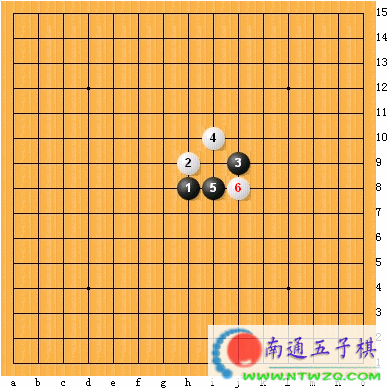
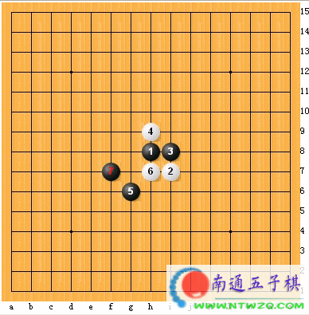
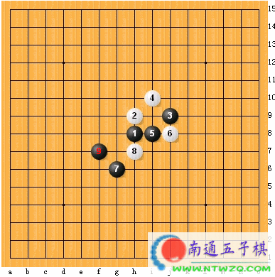
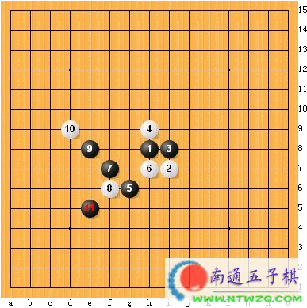
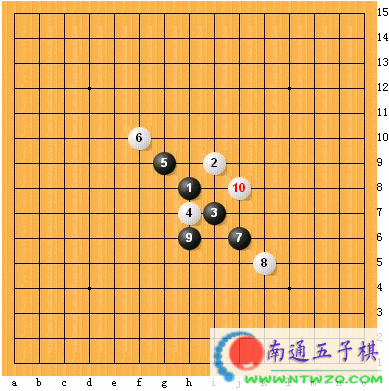
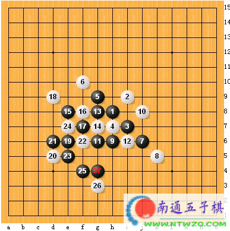
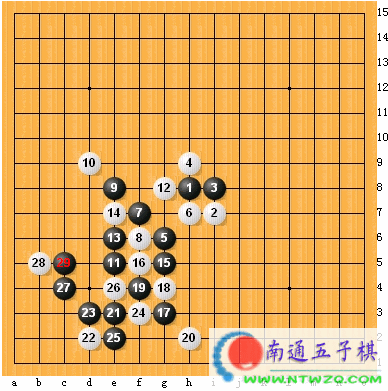

棋型的应用
#1 棋型的应用 作者：有志青年 发表时间：2006-7-3 15:47:27
五子棋基本杀型对初学者来说是很重要的。练VCT题目可以提高算力,也可以提高对杀棋的敏感度。然后就是基本杀型通型的应用了。下面举些例子来说明这一点。

这个是残月的一个变化。黑先如何杀?乍一看去，好象没有太好的手段，但如果你知道这个棋型,

你将会发现.如果你按下面的变化行棋，两个形状很相似。

下面的形状很像,上面的多余棋子是否对杀棋有影响呢?经过验证发现,上面的棋子并不能影响下面的杀。

上面这个形状，到了这里黑该如何行棋呢? 如果你熟悉蒲月的一个变化,这里就难不到你了。如下型.

我想这个型对于大部分知道蒲月定式的都会杀吧,经典杀法。

那么图(1)跟这个有什么关系呢?稍加变化你会发现。他们有相似的地方。如下图。

是不是很面熟啊。其实好多五子棋的形状都可以转化一下的。如果你对这些杀型理解了。熟悉了。就会左右逢源,触类旁通.杀起棋来也能得心应手。希望初学者能通过我这些废话得到一些启示.
原文地址：http://www.kh2006.net/dispbbs.asp?boardID=14&ID=1266&page=1
#2 Re:棋型的应用 作者：酒鬼 发表时间：2006-9-3 11:42:53
学习
#3 Re:棋型的应用 作者：ベ☆ve寶々 发表时间：2006-9-3 11:51:41
- -! 不清楚 !~~#4 Re:棋型的应用 作者：浩楠 发表时间：2006-9-12 14:31:28
我都看不出最后一图,难道黑棋必赢吗???,未必吧
#5 Re:棋型的应用 作者：冰冷的风 发表时间：2006-9-13 15:55:28
最后一个不一定能杀.#6 Re:棋型的应用 作者：风月无边 发表时间：2006-10-15 19:27:58
厉害 我顶 我服了!#7 Re:棋型的应用 作者：zhc120 发表时间：2006-11-5 8:22:39
这几种棋型具体应用没详细解答!
#8 Re:棋型的应用 作者：菜鸟飞飞 发表时间：2006-11-6 21:20:35
蒲月定式经典杀法，问题我现在还没有看懂
因为我看到后面出禁手了，是不是我理解错了
哎，基础没学好，那位高手有基础的定式杀法图？
有的话，发给我好吗，先谢谢了csdr8175@163.com
#9 Re:棋型的应用 作者：天线宝宝 发表时间：2006-11-8 9:23:54
太好了#10 Re:棋型的应用 作者：623193 发表时间：2006-12-1 16:58:35
有看头！
#11 Re:棋型的应用 作者：whk08 发表时间：2007-12-27 7:14:25
杀了#12 Re:棋型的应用 作者：业余九级菜手 发表时间：2010-4-4 9:11:41
=======上图对应的爱五子棋谱代码如下，以便你拆解：========
h8i7i8h9g6h7f7f6e8d9e5g8e6e7g5f5g3g4f4h2e3d2d3f3e2e4c4b5c5c6d6c7d5b3d4
======================================================
=======上图对应的爱五子棋谱代码如下，以便你拆解：========
h8i7i8h9g6h7f7f6e8d9e5g8e6e7g5f5g3g4f4h2e3d2d3f3e2e4c4b5c5d5c7
======================================================
=======上图对应的爱五子棋谱代码如下，以便你拆解：========
h8i7i8h9g6h7f7f6e8d9e5g8e6e7g5f5g3g4f4h2e3d2d3f3e2e4c4b5c5c3d6c7d5b3d4
======================================================
#13 Re:棋型的应用 作者：用心学习 发表时间：2010-5-8 19:01:41
原来不理解，学花浦的意义，只是单纯学，原来这么大的用处，茅塞顿开啊！